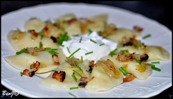

Bryndzové pirohy

Suroviny
- 600 g zemiaky varené v šupke
- 100 g bryndza májová
- 500 g múka polohrubá
- 1 celé vajce
- 1,5 čl soľ
- 0,5 čl korenie
- 70 g maslo
- 100 g slanina údená
- 0,2 l voda
- kôprová vňať
- pažitka
Postup
- Zemiaky uvariť v šupke a nechať vychladnúť
- Plnka:
Zemiaky pretrieme cez drobné strúhadlo.Pridáme bryndzu, sol, lyžicu tuhého masla, pol káv.lyžičky korenia (nemusí byť). Plnku spracujeme.
- Cesto:
Múku, celé vajce soľ,a 1,5 veľkej lyžice uvarených a postrúhaných zemiakov (z dávky na plnku), 2 dl teplej vody.
Spracujeme cesto, necháme asi 10 minút oddychovať.
Rozdelíme na dve časti.
Postupne vyválkame.
- Okrúhlou formičkou vykrajujeme kolieska. Tie naplníme plnkou
- Keď sú kolieska naplnené, priložíme obidve strany k sebe a krajom vidličky pritlačíme.
- Varíme v osolenej vode s lyžicou oleja. Voda musí vrieť, keď do nej pirohy vkladáme.
Pomaly premiešame a po vyplávaní ešte 7 minút varíme. Po vybratí opláchneme vlažnou vodou.
- Servírvanie:
Polejeme oškvarenou slaninkou, posypeme kôprom a pažítkou. Podávame s kefírom a kyslou smotanou.
- Plnka:Pirohy sa môžu ešte zapiecť.